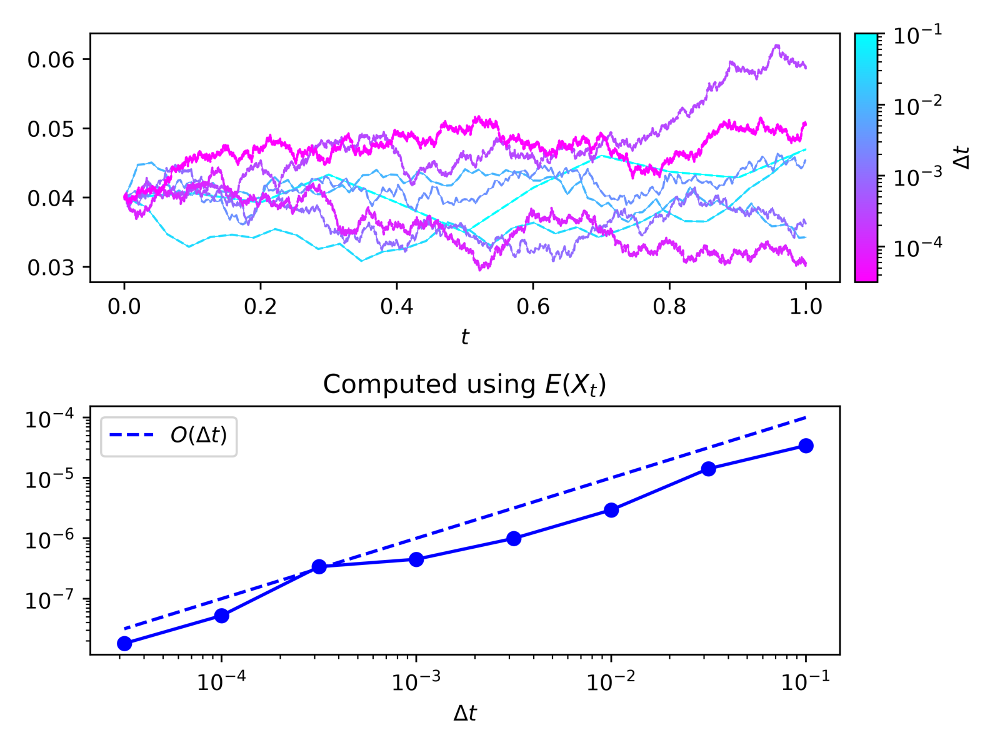
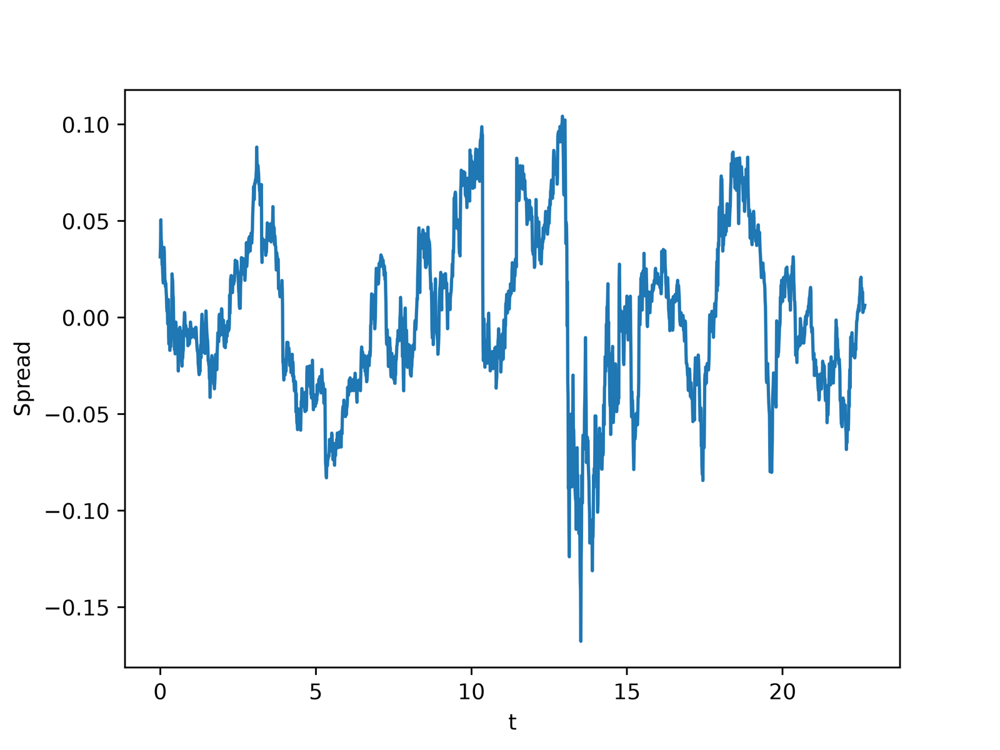
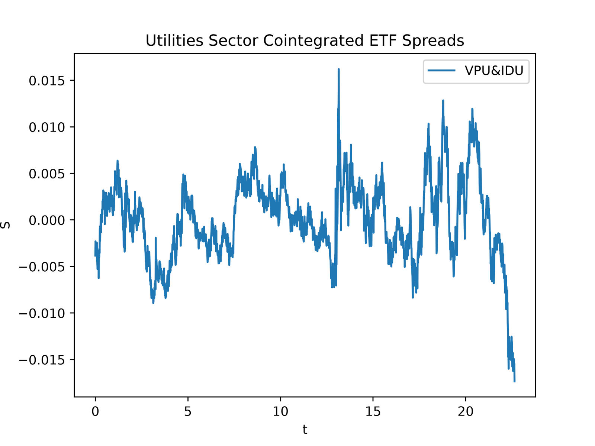

Statistical Arbitrage via Ornstein–Uhlenbeck Mean Reversion
Independent study · Fall 2026 · Code on GitHub ↗
Overview
Pairs trading bets that the price gap between two closely related assets will close again after it widens. This project models that gap, the spread, as an Ornstein–Uhlenbeck (OU) process, a continuous-time model of a quantity that is pulled back toward a long-run mean:
dXt = θ(μ − Xt) dt + σ dWt, θ, σ > 0
Here μ is the mean the spread returns to, θ sets how quickly it returns, and σ sets the size of the random shocks. The project works through the theory of the OU process, estimates its parameters from market data, and builds toward a backtested trading rule. It is written in Python with NumPy, statsmodels and yfinance.
The OU Process
Solving the SDE with an integrating factor gives Xt in closed form. It is Gaussian, with mean μ + (X0 − μ)e−θt and variance (σ2/2θ)(1 − e−2θt), so in the long run it settles to N(μ, σ2/2θ). A deviation from the mean decays like e−θt, which gives a half-life of ln(2)/θ. That number is a direct measure of how quickly a trade on the spread can be expected to pay off.
Sampling the solution every Δt gives an exact discretization: an AR(1) recursion Xn+1 = a + bXn + εn, where b = e−θΔt and a = μ(1 − b). These relations can be inverted to recover (θ, μ, σ) from (a, b, Var ε).
Simulation and Estimation
I simulated the OU process with the Euler–Maruyama scheme and compared it path by path against the exact discretization driven by the same Brownian increments. The strong error decreases at first order in Δt, as expected for an SDE with additive noise.

I also showed that the maximum-likelihood estimator of (θ, μ, σ) reduces to an ordinary least-squares regression of Xk+1 on Xk. The slope and intercept give b and a, and the mean squared residual gives Var ε.
Pair Selection and Spread
For a candidate pair, I regress one log price on the other to get a static hedge ratio, form the residual spread, and use an Augmented Dickey–Fuller test to check that the spread is stationary (p < 0.05). Spreads that pass are then fit to the OU model with the regression above. The fits use daily prices from 2015–2023, and 2024–2026 is held out for out-of-sample testing.


Next Steps
This project is still in progress. The remaining stages are:
- Time-varying hedge ratio: estimate the hedge ratio with a Kalman filter and compare it to the static regression.
- Trading rule and backtest: trade the standardized spread (z-score) with entry and exit thresholds, and evaluate the strategy on the held-out 2024–2026 data.
- Broken pairs: find and analyze a pair whose cointegration breaks down out of sample.